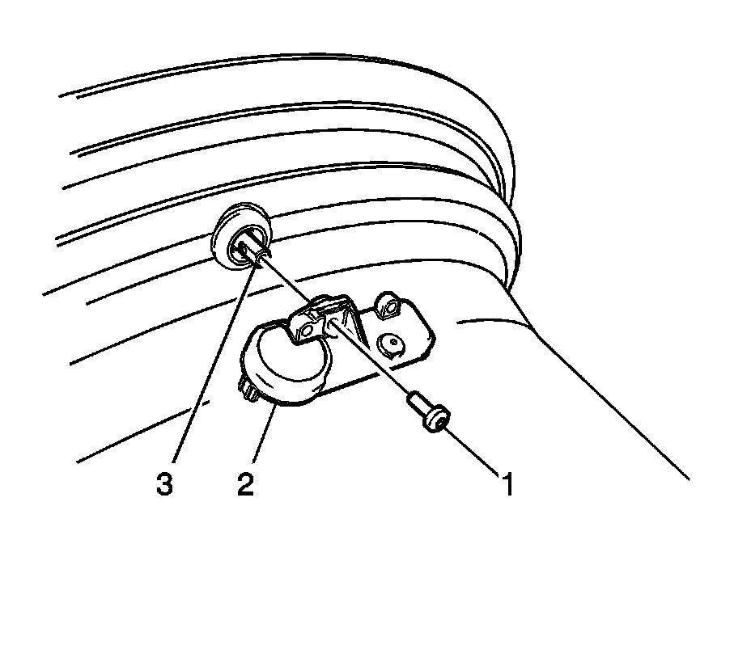
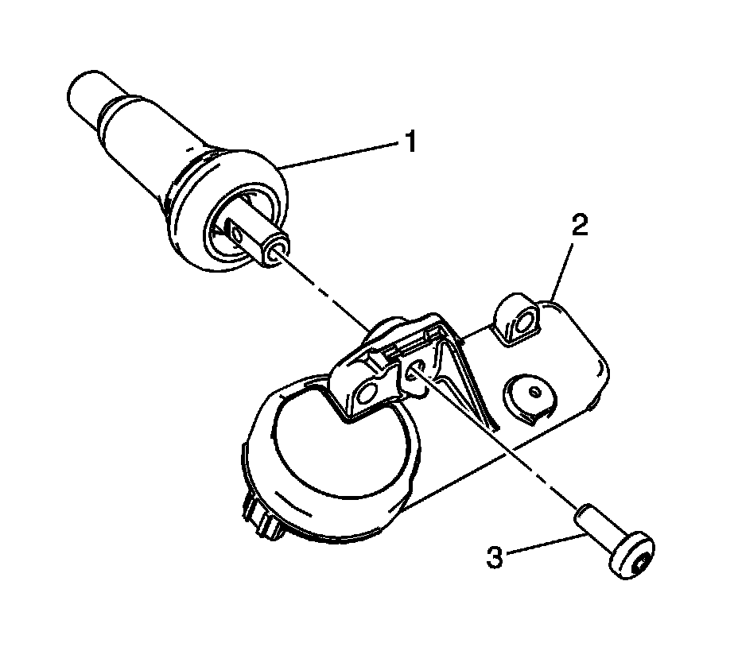
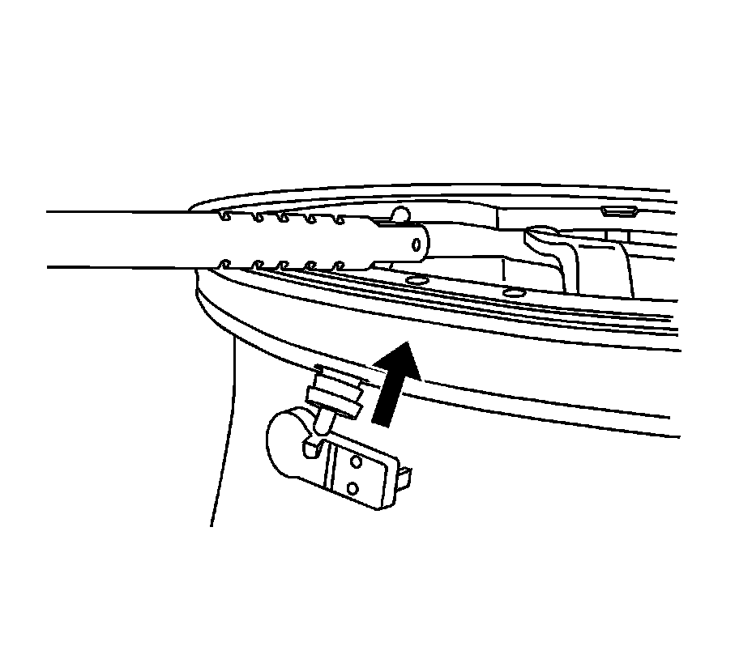

Tire Pressure Indicator Sensor Replacement (Snap In Style)
Tire Pressure Indicator Sensor Replacement (Snap In Style)
Removal Procedure
1. Raise the vehicle on a suitable support. Refer to Lifting and Jacking the Vehicle (Service and Repair) .
2. Remove the tire/wheel assembly from the vehicle. Refer to Tire and Wheel Removal and Installation (Service and Repair) .
3. Dismount the tire from the rim. Refer to Tire Mounting and Dismounting (Removal and Replacement) .
Important: When servicing the tire pressure sensor always use a new Schrader(R) tire pressure monitor (TPM) and a new TORX screw during installation.

4. Remove the TORX screw (1) from the tire pressure sensor (2) and pull it straight off the tire pressure valve stem (3).
Notice: Do not scratch or damage the clear coating on aluminum wheels with the tire changing equipment. Scratching the clear coating could cause the aluminum wheel to corrode and the clear coating to peel from the wheel.
5. Remove the tire pressure valve stem by pulling it through the rim.
Installation Procedure

Notice: Refer to Fastener Notice (Fastener Notice) .
Important:
* Ensure the flat of the valve, lines up with the flats of the snap in the enclosure.
* TPM valves and TORX screws are one-time use only.
1. Assemble the tire pressure sensor (2) to the valve stem and install the new TORX screw (3).
Tighten the TORX screw to 1.3 N.m (11.5 lb in).
Important: Use and approved tire mounting lubricant. DO NOT use silicon or corrosive base compounds to lubricate the tire bead and the wheel rim. A corrosive type compound can cause tire or rim deterioration.
2. Apply tire soap to the rubber portion of the valve stem (1).

3. Using a tire valve stem mounting tool, pull the valve stem through in a direction parallel to the valve hole on the rim.
Important: Snap Fit TPM sensors are still shipped in the OFF mode. However, the TPM no longer needs to be spun to remove it from the OFF mode. The sensor will exit its OFF state when the tire is inflated. The technician can then program the vehicle as normal.
4. Mount the tire to the rim. Refer to Tire Mounting and Dismounting (Removal and Replacement) .
5. Install the tire/wheel assembly on the vehicle. Refer to Tire and Wheel Removal and Installation (Service and Repair) .
6. Lower the vehicle.
7. Learn the tire pressure sensors. Refer to Tire Pressure Sensor Learn (Programming and Relearning) .